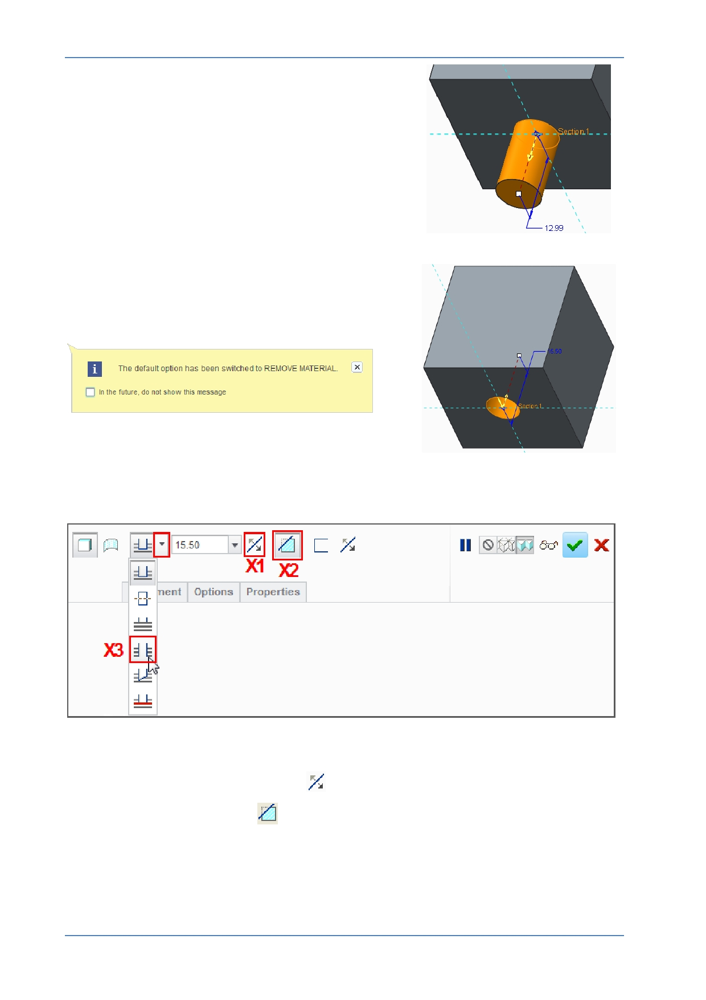

PTC Academic Program
By default, Creo Parametric will display a preview of
the extruded circle, adding material, away from the
model.
Drag the drag handle (small white square)
away from the model to add depth to the
feature.
Drag the drag handle the other direction, into
the model to reverse its direction.
Notice that Creo Parametric is smart enough to know
that extruding into the model requires material to be
removed (a cut).
In the Extrude dashboard at the top of the graphics
area, you will see that the Remove Material (X2) icon
has been automatically enabled.
6. Experiment with extrude dashboard controls.
Click Change Depth Direction
( X1 ) to toggle the extrude direction.
Click Remove Material
( X2 ) to toggle between adding and removing material.
© 2012 PTC
Creo Parametric 2.0 Primer
Page 27